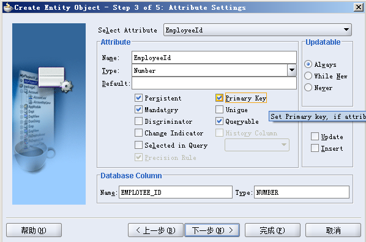

Search
完成本章练习后将掌握Oracle Application Framework中基本查询技巧.
Step 1. 创建Application Module (AM)
在项目目录结构中右键点击Project节点, 在弹出的上下文菜单中选择New选项, 弹出[New Gallery]对话框.
左边类型树选中Business Tier->ADF Business Components, 右部选中Application Module, 点击[OK]按钮, 此时弹出[Create Application Module]向导对话框.
在[Step 1 of 4]画面:
Package输入<your_name>.oracle.apps.ak.employee.server,
Name输入EmployeeAM,
点击[下一步]按钮直到[Step 4 of 4]画面.
确保选中了Generate Java File(s)复选框, 点击[完成]按钮完成AM的创建.
在项目目录结构中双击我们新建的EmployeeAM, 打开[Application Module Editor]对话框, 选中Custom Properties节点,
右侧Name设为RETENTION_LEVEL,
Value设为MANAGE_STATE,
点击[Add]按钮添加属性, 按[确定]按钮保存修改, 为AM启用了钝化.
Step 2. 创建Employee Entity Object (EO)
我们将为表FWK_TBX_EMPLOYEES创建Entity Object, 表关系图如下.
在项目目录结构中右键<your_name>.oracle.apps.ak.schema.server包节点, 在弹出的上下文菜单中选择New Entity Object选项, 弹出[Create Entity Object]对话框.
在[Step 1 of 5]画面:
Name输入EmployeeEO,
Package输入<your_name>.oracle.apps.ak.schema.server,
Schema Object输入FWK_TBX_EMPLOYEES,
选中Tables和Synonyms复选框,
点击[下一步]按钮.
在[Step 2 of 5]画面, Entity Attributes会列出FWK_TBX_EMPLOYEES表中的所有字段, 如果没有, 则点击[New From Table]按钮, 在打开的[Create New Entity Attributes for Columns]窗口中, 选中所有的栏位将其加入到Selected列表. 点击[下一步]按钮.

在[Step 3 of 5]画面, 确保EmployeeId属性的Primary Key复选框被选中, 点击[下一步]按钮.
在[Step 4 of 5]画面, 选中Entity Object Class: EmployeeEOImpl下的Generate Java File复选框, 在[Generate Methods]区域, 选中 Accessors, Create Method, Validation Method 和 Remove Method 复选框. 点击[下一步]按钮.
在[Step 5 of 5]画面, 确保没有选中Generate Default View Object复选框, 点击[完成]按钮, 完成EO的创建.
Step 3. 创建Employee-to-Manager Association (AO)
每一个Employee与他的Manager关系也维护在FWK_TBX_EMPLOYEES表中, 符合以下业务规则:
- 每一个Employee必须要有一个Manager, 除非他的POSITION_CODE != "PRESIDENT".
- 每一个Employee至多只能关联一个Manager.
- 每一个Manager可以关联多个Employee.
在项目目录结构中右键点击Project节点, 在弹出的上下文菜单中选择New选项, 弹出[New Gallery]对话框. 左边类型树选中Business Tier->ADF Business Components, 右部选中Association, 点击[OK]按钮, 此时弹出[Create Association]向导对话框.
在[Step 1 of 4]画面:
Package输入<your_name>.oracle.apps.ak.schema.server,
Name输入EmpToMgrAO,
点击[下一步]按钮.
在[Step 2 of 4]画面:
Cardinality下拉框选择 * to 0..1,
Select Source Attribute和Select Destination Attribute中都展开<your_name>.oracle.apps.ak.schema.server.EmployeeEO,
Select Source Attribute选中EmployeeEO下的ManagerId属性,
Select Destination Attribute选中EmployeeEO下的EmployeeId属性,
点击[Add]按钮进行关系的添加.
点击[下一步]按钮直到[Step 4 of 4]画面.
在[Step 4 of 4]画面, 确保两个Expose Accessor复选框都被选中. 点击[完成]按钮完成AO的创建.

Step 4. 创建EmployeeSummaryVO View Object (VO)
在项目目录结构中右键点击Project节点, 在弹出的上下文菜单中选择New选项, 弹出[New Gallery]对话框.
左边类型树选中Business Tier->ADF Business Components, 右部选中View Object,
点击[OK]按钮, 此时弹出[Create New View Object]向导对话框.
在[Step 1 of 8]画面:
Name输入EmployeeSummaryVO,
Package输入<your_name>.oracle.apps.ak.employee.server,
点击[下一步]按钮.
在[Step 2 of 8]画面:
在Available树中找到并选中我们创建的EmployeeEO, 点击两次[>]按钮进行添加.
选中第二个EmployeeEO1, 设置Association End为ManagerIdEmployeeEO,
点击[下一步]按钮.
在[Step 3 of 8]画面:
将Available树中的以下节点添加到右侧Selected中:
EmployeeEO下
- EmployeeId
- FullName
- EmailAddress
- EmployeeId
- FullName
- EmailAddress
在[Step 4 of 8]画面进行如下操作:
Attribute Settings选择FullName, Name改为EmployeeName, Query Column Alias改为EMPLOYEE_NAME,
Attribute Settings选择EmployeeId1, Name改为ManagerId, Query Column Alias改为MANAGER_ID,
Attribute Settings选择EmailAddress, Name改为EmployeeEmail, Query Column Alias改为EMPLOYEE_EMAIL,
Attribute Settings选择FullName1, Name改为ManagerName, Query Column Alias改为MANAGER_NAME,
Attribute Settings选择EmailAddress1, Name改为ManagerEmail, Query Column Alias改为MANAGER_EMAIL,
点击[下一步]按钮.

在[Step 5 of 8]画面, 选中Expert Mode复选框,
Query Statement中改为以下SQL:
SELECT EmployeeEO.EMPLOYEE_ID,
EmployeeEO.FULL_NAME AS EMPLOYEE_NAME,
EmployeeEO.EMAIL_ADDRESS AS EMPLOYEE_EMAIL,
EmployeeEO1.EMPLOYEE_ID AS MANAGER_ID,
EmployeeEO1.FULL_NAME AS MANAGER_NAME,
EmployeeEO1.EMAIL_ADDRESS AS MANAGER_EMAIL,
flkp.meaning AS POSITION_DISPLAY
FROM FWK_TBX_EMPLOYEES EmployeeEO,
FWK_TBX_EMPLOYEES EmployeeEO1,
FWK_TBX_LOOKUP_CODES_VL flkp
WHERE EmployeeEO.MANAGER_ID = EmployeeEO1.EMPLOYEE_ID (+)
and EmployeeEO.POSITION_CODE = flkp.lookup_code
and flkp.lookup_type = 'FWK_TBX_POSITIONS'
点击[下一步]按钮.
在[Step 8 of 8]画面, 取消选中View Object Class: EmployeeSummaryVOImpl下的Generate Java File复选框, 选中View Row Class: EmployeeSummaryVORowImpl下的Generate Java File复选框. 点击[完成]按钮, 完成VO的创建.
Step 5. 将VO加入到AM
在项目目录结构中双击EmployeeAM, 在打开的[Application Module Editor]对话框中, 左侧选项树中选中[Data Model]节点, 在右侧将我们刚创建的EmployeeSummaryVO加入到Data Model中.
Step 6. 创建EmpSearchPG页面
右键项目目录结构中的Project节点, 点击上下文菜单中New选项, 打开[New Gallery]对话框.
对话框左侧选项树中选中Web Tier->OA Components节点, 在右侧选中[Page]选项, 点击[OK]按钮打开[New Page]对话框.
Name输入EmpSearchPG,
Package输入<your_name>.oracle.apps.ak.employee.webui,
点击[确定]按钮完成页面创建.
选中Page, 在Structure窗口中选中自动创建的region1节点, 属性窗口会显示该Region的属性设定. 如果当前IDE没有打开属性窗口, 请选择菜单View->Property Inspector选项打开属性窗口. 在属性窗口对region1进行如下调整:
| Property | Value |
| ID | PageLayoutRN |
| Region Style | pageLayout |
| AM Definition | <yourname>.oracle.apps.ak.employee.server.EmployeeAM |
| Window Title | Framework Toolbox Tutorial: Labs <your name> |
| Title | Employees <your name> |
| AutoFooter |
True (This ensures that the standard footer, including the Oracle copyright and privacy notice, render in the page). |
在Structure窗口中选中PageLayoutRN节点, 右键并选择[New]->[productBranding]选项, 在pageLayoutComponents下自动创建productBranding节点并 包含一个名为item1的image节点.

在Structure窗口中选中item1, 对其属性进行如下设置:
| Property | Value |
| ID | ProdBrand |
| Image URI | FNDTAPPBRAND.gif |
| Additional Text |
OA Framework Toolbox Tutorial (This is required per the accessibility coding standards with which all Oracle E-Business Suite pages must comply). |
在Structure窗口中选中PageLayoutRN节点, 右键并选择[New]->[pageStatus]选项, 在pageLayoutComponents下自动创建pageStatus节点并包含一个名为region1的flowLayout节点, 将其ID属性 设置为PageStatusRN.
在Structure窗口中选中PageStatusRN节点, 右键并选择[New]->[item]选项新建一个名为item1的节点.
选中item1节点, 对其属性进行如下设置:
| Property | Value |
| ID | PageHelp |
| Item Style | staticStyledText |
| Data Type | VARCHAR2 |
| CSS Class | OraInstructionText |
| Message Appl Short Name | AK |
| Message Name | FWK_TBX_T_PAGE_GENERAL |
Step 7. 创建基于结果的基本查询
在Structure窗口中选中PageLayoutRN节点, 右键并选择[New]->[Region]选项新建一个名为region1的节点.
选中region1节点, 对其属性进行如下设置:
| Property | Value |
| ID | QueryRN |
| Region Style | query |
| Construction Mode | resultsBasedSearch |
| Include Simple Panel | True |
| Include Views Panel | True |
| Include Advanced Panel | True |
在Structure窗口中选中QueryRN节点, 右键并选择[New]->[Region Using Wizard]选项, 打开[Create Region]向导对话框.
在[Step 1 of 4]画面, [Application Module]下拉框选中我们创建的EmployeeAM, 在[Available View Usages]中选中EmployeeSummaryVO1,
点击[下一步]按钮.
在[Step 2 of 4]画面:
Region ID输入ResultsTable,
Region Style选择table,
点击[下一步]按钮.
在[Step 3 of 4]画面, 选择以下属性:
- EmployeeId
- EmployeeName
- PositionDisplay
- ManagerName
在[Step 4 of 4]画面, 对属性进行如下设定:
|
ID |
Prompt | Style | Data Type | Attribute Set * |
| EmpNum | Number | messageStyledText | NUMBER | /oracle/apps/fnd/framework/toolbox/attributesets/FwkTbxEmployees/EmployeeId_Number |
| EmpName | Name | messageStyledText | VARCHAR2 | /oracle/apps/fnd/framework/toolbox/attributesets/FwkTbxEmployees/FullName |
| Position | Position | messageStyledText | VARCHAR2 | /oracle/apps/fnd/framework/toolbox/attributesets/FwkTbxEmployees/Position |
| ManagerName | Manager | messageStyledText | VARCHAR2 | /oracle/apps/fnd/framework/toolbox/attributesets/FwkTbxEmployees/FullName_Manager |
在Structure窗口中选中ResultsTable节点, 将其属性进行如下设置:
| Property | Value |
| ID | ResultsTable |
| Region Style | table |
| AM Definition | Make absolutely sure that you have not inadvertently associated an application module here. If you have, please delete it. |
| Additional Text |
Employees Table (This is required per the accessibility coding standards). |
| Rendered | True |
| Records Displayed | 10 |
| Width | 100% |
| User Personalization | True (needed so the user can save a Personalized View) |
在Structure窗口中展开ResultsTable节点, 逐个选中其子节点, 进行如下设置:
EmpNum节点:
- Search Allowed设置为True
- Sort Allowed设置为ascending
- Initial Sort Sequence设置为first
- Selective Search Criteria设置为True
- User Personalization设置为True
- Search Allowed设置为True
- Selective Search Criteria设置为True
- User Personalization设置为True
- Search Allowed设置为True
- User Personalization设置为True
- Search Allowed设置为True
- Destination设置为mailto:{@ManagerEmail}
- User Personalization设置为True